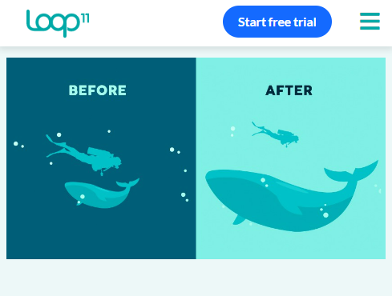

Visual Hierarchy
Loop11
loop11.com
Visual Hierarchy is the arrangement and presentation of design elements in order of their importance. It influences the order in which the human eye perceives the information that is being displayed.
This image shows us a before and after illustrating a man and a small whale before, but our vision changes when we look at the same man and the whale after. This is a great example about Visual Hierarchy.
Alignment
Graphic Design Fundamentals
graphicdesignfundamentals.com/Alignment is the placement of visual elements so they line up in a composition. In design, we use alignment to organize elements, to group elements, to create balance, to create structure, to create connections between elements, to create a sharp and clear outcome.
In this image we can see how we can organize our elements in our page.
Contrast
Scenolia
blog.scenolia.comContrast in graphic design occurs when visual elements placed close together noticeably differ from each other.
We can see in this image how the colors combine each other.